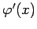
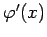
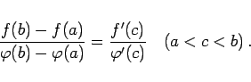
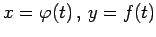
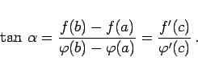
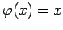

Inhalt Index DeskTop Bronstein

 Differentialrechnung Differentiation von Funktionen einer Veränderlichen Hauptsätze der Differentialrechnung
Differentialrechnung Differentiation von Funktionen einer Veränderlichen Hauptsätze der Differentialrechnung


Wenn zwei Funktionen y = f(x) und  in einem abgeschlossenen Intervall [a,b] stetig sind und wenigstens im Innern Ableitungen besitzen, wobei  an keiner Stelle des Intervalls verschwinden darf, dann existiert zwischen a und b wenigstens eine Zahl c derart, daß die Gleichung gilt
in einem abgeschlossenen Intervall [a,b] stetig sind und wenigstens im Innern Ableitungen besitzen, wobei  an keiner Stelle des Intervalls verschwinden darf, dann existiert zwischen a und b wenigstens eine Zahl c derart, daß die Gleichung gilt
|  | (6.32) |
Die geometrische Bedeutung des verallgemeinerten Mittelwertsatzes entspricht der des gewöhnlichen Mittelwertsatzes.
Geht man z.B. davon aus, daß die Kurve in der Abbildung in der Parameterform  gegeben ist, wobei die Punkte A und B den Parameterwerten t = a bzw. t = b entsprechen sollen, dann gilt für den Punkt C
|  | (6.33) |
Für  geht der verallgemeinerte Mittelwertsatz in den gewöhnlichen Mittelwertsatz über.